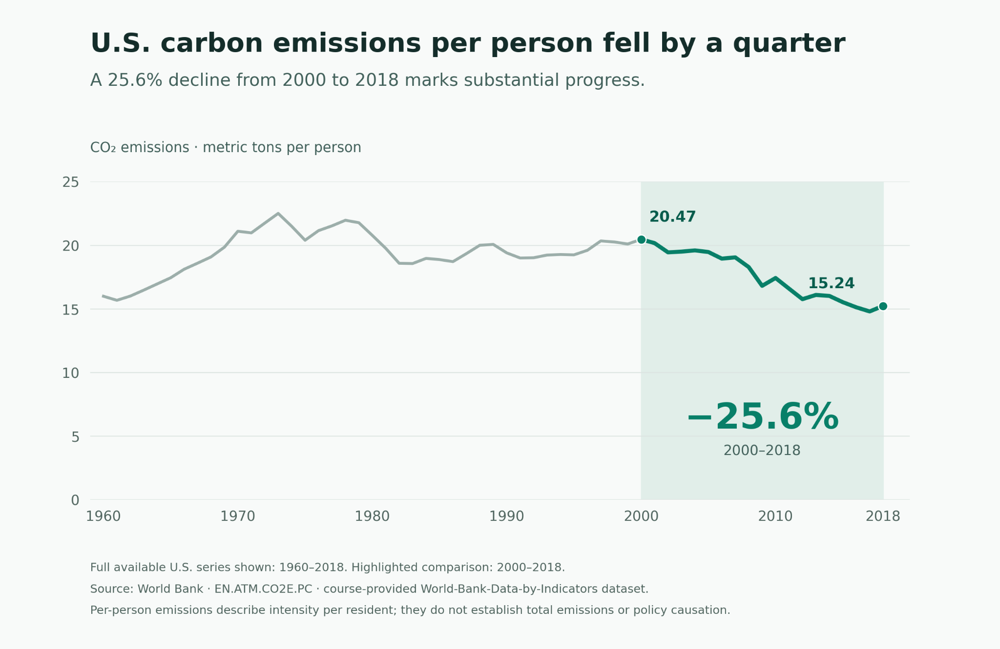
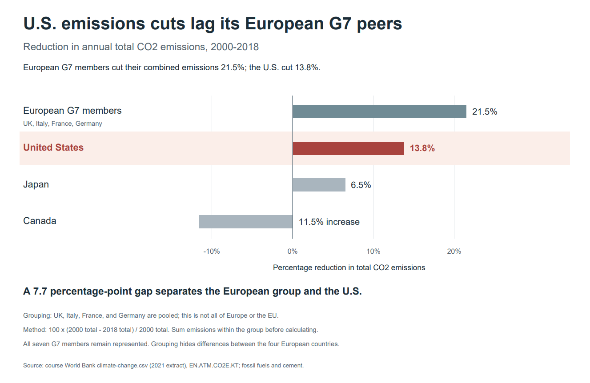

Proposition
The United States has made substantial progress in reducing carbon emissions.
Design decision scores range from −2 (fully deceptive) to +2 (fully earnest), with 0 representing neutral.
FOR the Proposition

Design Decisions and Rationale
Use CO₂ emissions per capita Score: −0.5
Using per-capita emissions highlights improvement per resident. This measure shows a 25.6% decline from 2000 to 2018, which supports the proposition more strongly than the 13.8% decline in total emissions over the same period. Total emissions would address the national contribution more directly, so the chart explicitly identifies the per-person metric and notes its limitations.
Highlight the period from 2000 to 2018 Score: −1
Highlighting 2000, a relatively high starting point, makes the subsequent decline appear substantial. A comparison beginning in 1960 would show much less improvement, demonstrating how the baseline influences the conclusion. We retain the earlier years for context and use 2018 because it is the last available year in this series, although the visual emphasis still favors the more persuasive comparison.
Use green to emphasize the recent decline Score: −0.5
The darker green line and pale green background draw attention to the highlighted period, while the gray historical line remains visible but less prominent. Green also suggests environmental improvement, reinforcing the supporting stance. Giving the entire series the same color would distribute attention more evenly, but would make the intended comparison less immediate.
Use an affirmative headline and a prominent percentage annotation Score: −1
The headline, “U.S. carbon emissions per person fell by a quarter,” summarizes the numerical result in accessible language. The large 25.6% annotation makes the decline easy to notice, while the subtitle interprets it as substantial progress. This framing is persuasive, but the percentage alone does not establish whether the improvement is sufficient. A neutral title would leave that judgment more open to the reader.
Retain the full historical series and a zero-based vertical axis Score: +2
Showing the complete available series from 1960 to 2018 allows readers to compare the highlighted decline with earlier increases and fluctuations. The zero-based axis provides a stable visual reference and avoids magnifying the decline through a narrowly cropped scale. A chart showing only 2000 to 2018 would focus attention more strongly, but would remove useful context. The endpoint labels, units, source, and scope note also help readers interpret the claim accurately.
AGAINST the Proposition

Design Decisions and Rationale
Group the European G7 members together Score: −0.5
The original chart showed Germany and France close to the U.S., which made the opposing argument less convincing. Following the feedback, we pooled the UK, Italy, France, and Germany instead of removing Germany. Their combined 21.5% reduction creates a clearer contrast with the U.S. at 13.8%, but it also hides differences within the group. We name all four members and acknowledge that Germany and France individually are much closer to the U.S.; this is not a claim about every European country.
Calculate percentage reductions from total emissions Score: +1.5
We sum the European members’ emissions in each endpoint year before calculating 100 × (2000 total − 2018 total) / 2000 total. This measures the change in their combined emissions, rather than giving each country equal weight by averaging its percentage reduction. Using percentages makes different-sized economies easier to compare, but leaves out the size of the actual cuts: the U.S. still reduced annual emissions by about 795 million metric tons. We use total CO₂ rather than per-capita emissions to address the national-emissions claim directly, and keep 2000–2018 consistent across every row.
Use a comparative headline and label the gap Score: −1
The headline, “U.S. emissions cuts lag its European G7 peers,” makes relative performance the standard for judging progress. The 7.7 percentage-point annotation draws attention to the difference instead of the U.S. decline itself. Both numbers are accurate, but being behind this group does not establish that U.S. progress was insignificant. A neutral headline would leave that judgment more open, while saying the U.S. made no progress would contradict the data.
Highlight the U.S. in muted red Score: −0.5
The red U.S. bar and pale background make its position easy to find among the comparison rows. Red also suggests disappointing performance, even though U.S. emissions decreased, so the color adds a negative interpretation to a real reduction. We keep the other bars quieter and label every value rather than making readers estimate the gap. Using one color throughout would be more neutral, but would give the U.S. less emphasis.
Keep a zero baseline and retain Japan and Canada Score: +2
Every bar starts at zero on the same linear scale, so the larger European reduction is not exaggerated by cropping the axis. Canada extends left because its emissions increased, while Japan shows a smaller reduction than the U.S. Both stay visible even though they weaken our argument; showing only the European group and the U.S. would make the comparison more selective. The four-row layout keeps the figure readable while still representing all seven G7 members, with the European grouping disclosed.
Final Reflection
The most straightforward part of this project was the mechanics. Once we agreed to use the World Bank’s emissions data, conducting exploratory analysis of per-capita and total changes, pooling the European G7 members, and building both charts was pretty straightforward. The hard part was deciding which accurate number to present to the reader. The same dataset gave us two stories depending on the metric and comparison we emphasized. In the supporting chart, we chose not to feature the smaller 13.8% decline in total emissions from 2000 to 2018, so we used the 25.6% per-capita decline instead. In the opposing chart, we made the total decline the centerpiece, placing it beside a larger European reduction so it could appear to fall short. We used our checkpoint feedback as a foundation for our revisions. When Germany and France sat close to the U.S., the opposing argument fell flat. Pooling them with the UK and Italy made the contrast work without changing any underlying country values.
What really surprised us was where the persuasion came from. We expected the “deceptive” side of the project to involve issues like missing labels and cherry-picked outliers. Instead, both charts use a zero baseline, label key values, cite sources, and retain information that could weaken our cases, including the full 1960 to 2018 series in the first chart and Japan and Canada in the second. We considered these among our most earnest decisions and rated them +2 on our earnestness scale. Our most persuasive choices were also the hardest to classify: the 2000 baseline, the metric, the comparison group, the headline, and the color. Green and red carry a judgment before anyone reads a number. None of these choices is inherently false, but together they allow two honest-looking charts to suggest opposite conclusions. This is why our framing choices received scores of −0.5 or −1 rather than the most deceptive rating.
At this point, we realized that ethical analysis and visualization is less about finding one correct chart and more about taking responsibility for the framing. We would draw the boundary as follows: a persuasive choice is acceptable when every element is accurate and a careful reader can still recover the information needed to consider an alternative conclusion. That information can come from the chart itself, its annotations, or its stated method and linked data. A choice can become misleading when it states something false or intentionally hides information needed to evaluate an alternative conclusion. Under this test, disclosing our European grouping and noting that per-capita figures do not capture total emissions help keep our charts on the acceptable side. Silently excluding Germany to strengthen our argument, or showing only the period after 2000 without acknowledging how the starting year affects the conclusion, would be more misleading. Even so, this test has limits. Many readers may not read footnotes and may form conclusions from headlines or color before reaching the disclosures. Transparency can make a chart defensible, but it does not make it neutral. A designer should therefore be honest and careful about the impression they are trying to create.